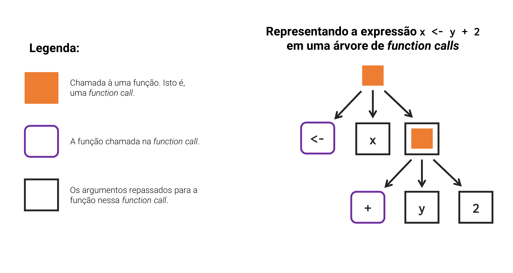
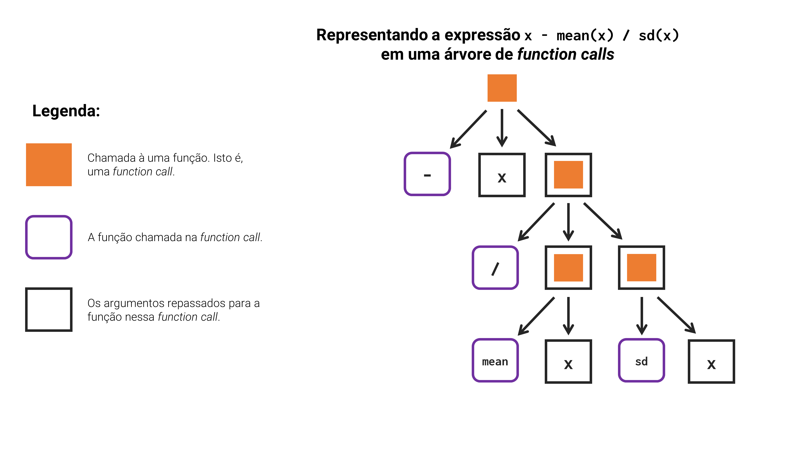

tab <- data.frame(
v1 = runif(10),
v2 = runif(10),
v3 = runif(10),
v4 = runif(10)
)
tab$v1 <- (tab$v1 - mean(tab$v1, na.rm = TRUE)) / sd(tab$v1, na.rm = TRUE)
tab$v2 <- (tab$v2 - mean(tab$v2, na.rm = TRUE)) / sd(tab$v2, na.rm = TRUE)
tab$v3 <- (tab$v3 - mean(tab$v2, na.rm = TRUE)) / sd(tab$v3, na.rm = TRUE)
tab$v4 <- (tab$v4 - mean(tab$v4, na.rm = TRUE)) / sd(tab$v4, na.rm = TRUE)14 Funções
14.1 Introdução
Cada pessoa possui necessidades diferentes em seu trabalho, e a grande vantagem de se utilizar uma linguagem de programação para executar esse trabalho, é que ela lhe fornece as ferramentas para que você mesmo possa expandi-la para satisfazer os seus próprios objetivos. E a base para tal expansão está na construção de funções.
No início, você pode ter bastante dificuldade de construir a função que você deseja. Há vários pontos que tornam esse processo difícil. Usuários que ainda não absorveram as principais características da linguagem apresentadas no capítulo de Fundamentos da Linguagem R, podem ter muita dificuldade em identificar a origem de erros comuns em suas funções. Para mais, quando você executa uma determinada função, ela processa todas as suas tarefas em um ambiente diferente do seu. Isto significa que você não vê na maior parte do tempo, quais são os resultados que essa função está gerando, ou que objetos ela está criando, e tal situação nebulosa pode confundir muitos usuários.
Apesar dessas dificuldades, a capacidade de construir as suas próprias funções, amplia e muito os seus horizontes, ao permitir que você se aproprie da linguagem. Isto é, através de funções você é capaz de personalizar a linguagem R para que ela resolva especificamente os seus problemas, da maneira exata que você deseja que eles sejam resolvidos. Em outras palavras, apesar da linguagem R já lhe fornecer as principais ferramentas, ela também permite que você construa as suas próprias ferramentas para resolver problemas mais complexos ou mais específicos.
De certa forma, todos que realizam algum trabalho sério com o R, estão muito provavelmente expandindo a linguagem o tempo todo (CHAMBERS, 2016, p. 3). Por isso, neste capítulo, vamos mostrar os primeiros passos para que você possa começar a montar as suas próprias funções. Vamos fornecer algumas dicas de como enfrentar erros, além de descrever as melhores formas de se organizar essas funções, para que você não se perca no meio do processo.
14.2 Em que momento você deve construir uma função ?
Um bom guia é: se você copiar e colar um mesmo conjunto de comandos mais de 2 vezes, construa uma função para esses comandos! (WICKHAM; GROLEMUND, 2017). Muitos usuários e programadores em geral conhecem essa regra como o princípio DRY - do not repeat yourself! (“não repita você mesmo!”). Portanto, se você utiliza constantemente um mesmo conjunto de comandos em vários contextos diferentes, talvez esta seja a hora de você construir uma função no R que executa esses comandos.
Como exemplo, suponha que eu tenho um data.frame chamado tab. Dentro dele, encontramos 4 colunas numéricas (v1, v2, v3 e v4). Perceba que, após criar essa tabela com a função data.frame(), eu tenho um bloco de 4 linhas de comandos. Com um pouco de atenção, você talvez perceba que esses comandos estão apenas normalizando cada uma dessas 4 colunas, segundo um índice \(Z\) de uma distribuição normal.
Entretanto, talvez a primeira coisa que você de fato reparou nesse bloco de comandos, é que eles são um pouco difíceis de se ler. Agora, se você realmente prestar atenção neles, você provavelmente pode identificar um erro de digitação, mais especificamente, na linha de comandos que está normalizando a coluna v3. Perceba que eu me esqueci de ajustar a coluna dentro da função mean(), para a coluna v3. Por causa desse erro, os valores da coluna v3 serão normalizados segundo a média dos valores da coluna v2.
Isso é um erro extremamente comum quando começamos a copiar e colar muito um mesmo pedaço de código. Tal erro, ocorre principalmente porque os nossos olhos tendem a focar muito de sua atenção no que é muito diferente do que está ao redor, e não no que é muito parecido entre si. Consequentemente, quando temos muita repetição em um determinado bloco de comandos, ler e compreender esses comandos se torna uma atividade mais difícil e que exige muito mais de sua atenção.
Ao criarmos uma função que justamente executa esses comandos, evitamos esses erros de digitação que são extremamente comuns e que podem ser extremamente danosos. Imagine se alguma pessoa dependesse diretamente dos valores dessa coluna v3 para executar o seu trabalho. Por exemplo, se algum gerente faz suas decisões de negócio com base nessa coluna v3, ele estaria baseando suas decisões em valores errados! Caso você não detectasse esse erro a tempo, antes de enviar os dados para esse gerente, você poderia muito bem perder o seu emprego!
Para mais, perceba que no exemplo acima, eu repeti o mesmo conjunto de comandos 4 vezes, e por causa disso, se eu precisasse alterar alguma coisa nesses comandos (e.g. para utilizar colunas diferentes, ou normalizar as colunas segundo uma fórmula de cálculo diferente, etc.), eu teria que fazer alterações em 4 lugares diferentes.
Por outro lado, quando você guarda esses comandos dentro de uma função, você precisa aplicar essas modificações em um único local. Pois ao alterarmos a definição da função, as mudanças são automaticamente refletidas sobre todos os locais onde você emprega essa função. Consequentemente, agrupar os seus comandos em funções, torna a manutenção de seu script mais simples e fácil.
14.2.1 Um exemplo inicial de função
Como exemplo inicial, vamos criar uma função para o bloco de comandos mostrados na seção anterior. Primeiro, vamos analisar os comandos que estão sendo utilizados, para saber o que essa função vai executar, e que argumentos ela vai precisar. Reproduzi logo abaixo uma parte dos comandos utilizados. Agora, pergunte-se que argumentos essa função precisaria para executar esses comandos abaixo? Ou em outras palavras, quais inputs essa função vai utilizar?
(tab$v1 - mean(tab$v1, na.rm = TRUE)) / sd(tab$v1, na.rm = TRUE)Para definir os inputs de uma função, é muito útil observarmos as várias repetições dos comandos que queremos incluir nessa função, e identificarmos o que está mudando entre cada repetição. Se você voltar às 4 repetições desses comandos que mostramos na seção passada, você pode perceber que a única coisa que está mudando entre cada linha de código, são as colunas utilizadas (v1, v2, v3 ou v4). Portanto, podemos concluir que nossa função precisa de 1 único argumento, que seria a coluna a ser normalizada.
Tendo isso em mente, poderíamos reescrever a expressão acima com o argumento x de nossa função. Por escolha própria, determinei que o nome desse argumento seria x. Mas a realidade, é que você pode dar o nome que quiser para os argumentos de sua função (poderíamos muito bem dar a ele o nome de coluna por exemplo). Pois esses argumentos são apenas “apelidos” que damos aos inputs de uma função.
(x - mean(x, na.rm = TRUE)) / sd(x, na.rm = TRUE)Agora, contornamos essa expressão por um par de chaves{}, e posicionamos antes desse par de chaves, a palavra-chave function, seguida de nosso argumento x dentro de um par de parênteses. Com isso, temos a definição completa de nossa função.
function(x){
(x - mean(x, na.rm = TRUE)) / sd(x, na.rm = TRUE)
}Porém, nós precisamos salvar essa definição em algum lugar. Portanto, salve o resultado dessa estrutura em um novo objeto. Dessa forma, temos agora uma nova função chamada normalizar(), que executa a expressão que definimos acima.
normalizar <- function(x){
(x - mean(x, na.rm = TRUE)) / sd(x, na.rm = TRUE)
}Com essa nova função, podemos reescrever o bloco de comandos que mostramos na seção passada, da maneira apresentada abaixo. Ainda temos certa repetição nos comandos, mas agora, temos um bloco muito mais simples e fácil de se compreender. Para eliminar completamente a repetição envolvida nesses comandos, poderíamos adicionar um loop com a função normalizar(), ou, utilizar uma das funções disponíveis no pacote purrr. Porém, veremos essas técnicas mais à frente, por enquanto, continuaremos focando nos poderes e características que emergem das funções.
tab$v1 <- normalizar(tab$v1)
tab$v2 <- normalizar(tab$v2)
tab$v3 <- normalizar(tab$v3)
tab$v4 <- normalizar(tab$v4)14.3 O que uma função faz ?
O que uma função faz não é algo muito distante do que você já normalmente faz em sua sessão do R, enviando manualmente cada um de seus comandos do R para dentro do console. Porém, quando você armazena os seus comandos dentro de funções, replicar esses comandos para outras áreas, amostras e indivíduos, se torna algo muito mais fácil e prático. É essa capacidade de expandir o seu trabalho com facilidade, que torna uma função algo muito poderoso.
“Writing functions in R is not separate from issuing commands interactively, but grows from using, and reusing, such commands” (CHAMBERS, 2008, p. 37).
Em resumo, uma função lhe permite reutilizar um certo conjunto de comandos, além de parametrizar a sua execução. Por exemplo, se você possui um bloco de comandos de, digamos, 20 linhas, ao inserir esse bloco de comandos dentro de uma função, você se torna capaz de executar essas 20 linhas de código através de 1 único comando. Por consequência, você não tem mais o trabalho de enviar individualmente cada uma das 20 linhas para o console.
Para mais, uma função lhe permite que você defina argumentos (ou parâmetros, ou inputs). Através desses argumentos, você é capaz de modificar a forma como essas 20 linhas de código operam e, consequentemente, alterar o resultado que elas produzem.
Tendo esses pontos em mente, você geralmente utiliza uma função, quando você deseja aplicar os mesmos comandos (ou a mesma “funcionalidade”) sobre vários inputs diferentes. Essa característica se torna extremamente importante a partir do momento em que você precisa expandir o seu trabalho para um número maior de locais.
Por exemplo, suponha que você aplique hoje, os comandos x, y e z sobre 1 única tabela para calcular um determinado indicador. Agora, suponha que amanhã você tenha que calcular o mesmo indicador, só que para um conjunto de 1000 tabelas diferentes. Como você enfrentaria esse desafio? Você copiaria 1000 vezes os comandos x, y e z em seu script para cada uma dessas 1000 tabelas? Uma solução muito mais eficiente para esse problema, seria criarmos uma função que aplica os comandos x, y e z sobre um determinado input, e pedirmos ao R que aplique essa função sobre essas 1000 tabelas por nós.

14.4 Os passos e componentes necessários para se criar uma função
Segundo WICKHAM; GROLEMUND (2017), a criação de uma nova função no R envolve a realização de 3 passos:
- escolha um nome para a sua nova função.
- defina os argumentos que essa nova função vai precisar, e quais deles são obrigatórios ou opcionais.
- insira dentro do corpo da função, todos os comandos que você deseja que ela execute.
Estes 3 passos refletem exatamente a estrutura de uma função no R, a qual é formada por 3 componentes diferentes, que são: 1) o nome da função; 2) os argumentos da função; e 3) o corpo, ou o body da função. Para uma compreensão mais visual de cada um desses 3 componentes, eu delimitei cada um deles na Figura 14.1. Nessa figura, utilizo como exemplo, uma função chamada somar, que simplesmente soma os dois argumentos fornecidos a ela, e nos retorna o resultado dessa soma.
Portanto, toda função que você cria no R deve possuir esses três componentes. Para criarmos a definição de uma função no R (que representa a área laranja escura na Figura 14.1), nós sempre iniciamos pela palavra-chave function. Ou seja, quando você digita essa palavra-chave, o R entende que você está prestes a construir a definição de uma função, ao descrever os seus argumentos e o seu corpo.
14.4.1 Um exemplo: identificando anos bissextos
Vamos supor que, você possua uma necessidade bem específica, que é a de identificar se um determinado ano é um ano bissexto. Você estudou a definição de um ano bissexto, tentou aplicar essa definição dentro do R, e conseguiu construir o teste lógico abaixo, que realiza os testes necessários. Lembre-se que um ano bissexto é um ano que: 1) é múltiplo de 4; e 2) não é múltiplo de 100, a menos que ele seja múltiplo de 400. Repare que, estamos utilizando abaixo o operador %%, o qual nos retorna o resto da divisão. Portanto, se o resto da divisão entre um determinado ano e um número x for igual a zero, sabemos que esse ano é múltiplo de x. Caso esse resto seja diferente de zero, sabemos que esse ano não é múltiplo de x.
## Testando se o ano de 2008 é bissexto ou não
(2008 %% 4 == 0) & ((2008 %% 100 != 0) | (2008 %% 400 == 0))[1] TRUEPortanto, se você precisa identificar múltiplos anos como anos bissextos ou não bissextos, você talvez comece a copiar e colar o código que você criou acima para cada ano que você deseja testar, formando algo como:
# Para o ano de 2009
(2009 %% 4 == 0) & ((2009 %% 100 != 0) | (2009 %% 400 == 0))[1] FALSE# Para o ano de 2010
(2010 %% 4 == 0) & ((2010 %% 100 != 0) | (2010 %% 400 == 0))[1] FALSE# Para o ano de 2011
(2011 %% 4 == 0) & ((2011 %% 100 != 0) | (2011 %% 400 == 0))[1] FALSE# Para o ano de 2012
(2012 %% 4 == 0) & ((2012 %% 100 != 0) | (2012 %% 400 == 0))[1] TRUESe você for esperto o suficiente, vai acabar percebendo que o teste lógico que você criou acima é capaz de lidar com um vetor de anos a serem testados.
anos <- 2008:2016
resultado <- (anos %% 4 == 0) & ((anos %% 100 != 0) | (anos %% 400 == 0))
names(resultado) <- anos
print(resultado) 2008 2009 2010 2011 2012 2013 2014 2015 2016
TRUE FALSE FALSE FALSE TRUE FALSE FALSE FALSE TRUE Nada mal, mas porque não incorporamos esse teste dentro de uma função? Primeiro, precisamos escolher um nome para essa função. Para o nosso exemplo, algo como é_ano_bissexto é suficiente. Ou se preferir, em inglês, is_leap_year. Porém, se você puder, é sempre interessante retirar os acentos de nomes de seus objetos e funções, para evitar possíveis problemas de encoding. Dessa forma, e_ano_bissexto é um nome melhor.
Agora que definimos o nome da função, começamos a construir a sua definição. Lembre-se que a definição de uma função sempre se inicia pela palavra-chave function, seguida por um par de parênteses (onde serão definidos os argumentos) e por um par de chaves (onde será definido o corpo).
e_ano_bissexto <- function(){
# Corpo da função
}A segunda etapa do processo, é definir quais os inputs que essa função precisa. Como essa é uma função que busca identificar se um determinado ano é bissexto ou não, essa função precisa receber um ano sobre o qual ela possa aplicar os seus testes. Esse ano é certamente um input obrigatório, pois caso essa função não receba esse ano, ela vai aplicar os seus testes sobre o quê especificamente?
Portanto, determinamos que essa função precisa ter 1 argumento obrigatório, que é o ano a ser testado. Por minha escolha, dei o nome de ano a esse argumento, mas ele poderia se chamar x, y, ou qualquer outro nome de sua preferência. Lembre-se que argumentos são como apelidos, eles apenas determinam em que parte do corpo da função será empregado os valores que você fornece a estes argumentos.
e_ano_bissexto <- function(ano){
# Corpo da função
}No estado atual da nossa função e_ano_bissexto, ela possui um argumento chamado ano, mas essa função não calcula absolutamente nada, ela nem sequer chega a aplicar algum cálculo sobre o valor que fornecemos a esse argumento ano. Essa é a situação atual, pois o corpo (ou o body) dessa função está vazio. Desse modo, o comando abaixo realiza sim uma chamada à função e_ano_bissexto com o valor de 2020 para o argumento ano, porém, a função em si, simplesmente não realiza cálculo nenhum ou nos retorna algum resultado.
e_ano_bissexto(2020)NULLSendo assim, é hora de preenchermos o corpo dessa função. Lembre-se que, o corpo de uma função deve conter os comandos que você deseja que essa função execute por você. Nós sabemos que a função e_ano_bissexto() deve testar se um ano é bissexto, logo, devemos incluir nesse corpo, os comandos necessários para aplicar esse teste lógico, considerando o argumento ano que definimos na etapa anterior.
e_ano_bissexto <- function(ano){
(ano %% 4 == 0) & ((ano %% 100 != 0) | (ano %% 400 == 0))
}Enfim, temos a nossa função e_ano_bissexto() funcionando da forma como desejamos:
e_ano_bissexto(2100) # FALSE pois é múltiplo de 100 mas não de 400[1] FALSEe_ano_bissexto(2020) # TRUE pois é múltiplo de 4[1] TRUEe_ano_bissexto(2012:2016) # TRUE para 2012 e 2016[1] TRUE FALSE FALSE FALSE TRUE14.5 Funções são para humanos e para computadores
O título dessa seção foi retirado diretamente da obra de WICKHAM; GROLEMUND (2017). Com essa frase, WICKHAM; GROLEMUND (2017) buscam destacar a importância do grau de legibilidade e da documentação de uma função. Ou seja, sempre que você cria uma função, é fundamental que você escolha nomes claros para cada parte dessa função e que você documente o máximo de detalhes sobre ela.
Dessa forma, quando você voltar a essa função um ano depois desde a data em que você a criou, você terá muito mais facilidade de ler, compreender e relembrar o que essa função faz e o quais são os aspectos mais importantes sobre ela. Essa questão se torna ainda mais importante quando você está colaborando com outras pessoas, pois elas precisam ler e compreender o seu código, para que elas possam discutir e trazer as suas contribuições ao trabalho que vocês estão realizando.
Vamos começar pelo nome de sua função. Diferentes estilos de nomes são utilizados hoje no mundo da programação. O importante não é qual desses estilos você adota, mas sim, que você adote um e que você permaneça com ele. Ou seja, veja qual estilo te agrada mais e seja feliz com ele. O objetivo disso é tornar o seu código consistente, de forma que ele sempre esteja utilizando o mesmo estilo. Pois caso contrário, se o seu código utiliza muitos estilos diferentes ao mesmo tempo, sempre que você estiver lendo o seu código, você precisa trocar o tempo todo o seu modo de leitura, e isso exige certo esforço e concentração.
Como um guia, os principais estilos utilizados hoje no R são: 1) o UpperCamel; 2) o camelCase ; 3) o snake_case; e 4) o dot.case, que é o padrão utilizado pelo próprio R na maioria de suas funções de seus pacotes básicos. Exemplos de funções que utilizam o padrão dot.case são data.frame(), list.files() e is.na().
Pode ser particularmente difícil de se definir um nome curto, e que ainda assim, traga significado para a sua função. De qualquer forma, não é pecado nenhum utilizar nomes grandes em suas funções, desde que eles entreguem o objetivo da função de forma clara. Como um guia, os nomes de funções geralmente devem ser verbos (por exemplo, bind_rows() ou “unir linhas”), e os nomes de seus argumentos, um substantivo (WICKHAM; GROLEMUND, 2017). Entretando, há ocasiões em que é melhor utilizar um substantivo para nomear uma função, especialmente se ela está computando um valor que é muito conhecido por algum substantivo específico (por exemplo, a média - mean(), ou os coeficientes de uma regressão - coef()).
A medida em que você vai construindo múltiplas funções em um mesmo script, é útil dividirmos esse script em seções, e adicionar comentários à função que explicam como cada parte dela funciona. Nós já vimos essa funcionalidade anteriormente, na seção Scripts, mas é útil relembrarmos aqui.
Para além de descrever como a função funciona, também é importante que você utilize os comentários para descrever o que os inputs de sua função devem ser (e.g. “o argumento df aceita um data.frame que contenha uma coluna chamada valor”), ou, o que eles definitivamente não podem ser (e.g. “os argumentos A e B não podem ser vetores de comprimentos diferentes!”). Como exemplo, a função normalizar() funciona apenas para vetores de comprimento maior do que 1.
## A função normalizar() busca "normalizar" um determinado vetor
## ou coluna, segundo o índice Z de uma distribuição normal.
## OBS: argumento x deve ser um vetor de comprimento maior que 1.
normalizar <- function(x){
(x - mean(x, na.rm = TRUE)) / sd(x, na.rm = TRUE)
}14.6 Construindo argumentos e resultados de uma função
14.6.1 Podemos ter argumentos obrigatórios e/ou opcionais
Quando você define um argumento de uma função, você pode torná-lo um argumento obrigatório ou opcional. Se uma função possui um argumento obrigatório, você não consegue executar essa função sem definir algum valor para esse argumento. Por exemplo, vamos voltar à função somar() que mostramos na Figura 14.1. Essa função possui dois argumentos (x e y). Caso eu defina um valor para o argumento x, mas não defina um valor para o argumento y, um erro será retornado.
somar <- function(x, y){
resultado <- x + y
return(resultado)
}Tal erro ocorre, pois o argumento y (assim como o argumento x) é um argumento obrigatório da função somar(). Um argumento se torna obrigatório, na medida em que você não estabelece um valor padrão (ou “default”) para ele, na definição de sua função.
somar(x = 56)Error in somar(x = 56) : argument "y" is missing, with no defaultPara estabelecer um valor padrão para um argumento de uma função, basta que você iguale esse argumento a este valor padrão na definição dessa função (mais especificamente, dentro dos parênteses onde são definidos os argumentos da função). Como exemplo, se eu quisesse que o argumento y da função somar() tivesse o valor padrão de 10, eu deveria recriar a função da seguinte forma:
somar <- function(x, y = 10){
resultado <- x + y
return(resultado)
}Dessa forma, eu posso chamar novamente a função definindo apenas o argumento x, e dessa vez, nenhum erro aparece. Pois agora, o argumento y se tornou um argumento opcional, dado que ele já possui um valor padrão. Por causa disso, toda vez que eu executar essa função, ela sempre vai realizar os seus cálculos considerando o valor de 10 para o argumento y.
somar(x = 56)[1] 66somar(x = 32)[1] 42Agora, não é porque um certo argumento possui um valor padrão, que você não pode sobrescrever esse valor durante uma chamada. Como exemplo, se eu quisesse somar os números 56 e 43, ao invés de 56 e 10 (o valor padrão do argumento y), eu poderia executar o seguinte comando:
somar(x = 56, y = 43)[1] 99Isso quer dizer que, você pode estabelecer um valor padrão para um determinado argumento, mas você não é capaz de determinar um valor único, obrigatório e irreversível para esse argumento na lista de argumentos da função. A única possibilidade de você limitar o valor de um determinado argumento, é você criar validações e bloqueios dentro do corpo de sua função que obrigam o usuário a fornecer um valor específico a este argumento.
Por exemplo, se quiséssemos limitar o argumento y ao valor 10, poderíamos fazer isso da forma mostrada abaixo. Tal método utiliza a função stop() dentro de um controle condicional de fluxo, construído pela palavra-chave if.
somar <- function(x, y = 10){
if(y != 10){
stop("O valor do argumento y precisa ser igual a 10.")
}
resultado <- x + y
return(resultado)
}
somar(x = 56, y = 43)Error in somar(x = 56, y = 43) : O valor do argumento y precisa ser igual a 10.Por outro lado, um outro método bastante simples de limitarmos o valor de y, seria simplesmente retirarmos ele da lista de argumentos, de modo que ele seja definido dentro do corpo da função. Dessa forma, estamos retirando a possibilidade do usuário definir um valor para a variável y. Agora, toda vez que executarmos a função somar, ela sempre vai criar um novo objeto chamado y contendo o valor 10.
somar <- function(x){
y <- 10
resultado <- x + y
return(resultado)
}
somar(x = 56)[1] 66Vale ressaltar que, o valor padrão de um determinado argumento pode ser qualquer coisa que a linguagem R te permite definir. Pode ser, por exemplo, uma constante (e.g., y = 10), uma lista (e.g., y = list("add", "remove", "mult")), uma outra função (e.g., y = sum ou y = mean), ou um vetor (e.g., y = c(0.25, 0.5, 0.75)).
Comparado à linguagem Python, a linguagem R te dá total liberdade para posicionar os seus argumentos dentro da lista de argumentos de sua função. Em outras palavras, os argumentos opcionais de sua função podem estar em qualquer posição da lista de argumentos. Por causa disso, podemos definir um valor padrão para o argumento x e, ainda assim, mantê-lo como o primeiro argumento da função.
somar <- function(x = 10, y){
resultado <- x + y
return(resultado)
}
somar(y = 20)[1] 30Isso não é possível de ser feito na linguagem Python, pois ela te obriga a posicionar os seus argumentos opcionais como os últimos argumentos de sua função. Consequentemente, se tentássemos reproduzir a versão acima de somar(), em Python, teríamos o seguinte resultado:
def somar(y, x = 10):
resultado = x + y
return resultado
somar(y = 20)3014.6.2 Algumas dicas sobre argument matching
Quando um argumento de sua função possui um conjunto pequeno e bem definido de valores possíveis, pode ser interessante empregar um argument matching sobre este argumento. Essa técnica é utilizada principalmente em argumentos que podem assumir um valor em texto (uma string), como "center", "secs" ou "auto", e se baseia na função match.arg() que pertence aos pacotes básicos do R, ou ainda, na função arg_match() que advém do pacote rlang e que realiza exatamente o mesmo trabalho1.
Um exemplo de função que utiliza essa técnica é a função format(), ou, de maneira mais precisa, o seu argumento justify. Em resumo, o argumento justify de format() pode assumir apenas 4 valores: "left", "right", "centre" ou "none". A função match.arg() é responsável por conferir se o usuário selecionou um desses 4 valores neste argumento justify. Caso você forneça qualquer valor que não esteja dentre esses 4 valores, a função vai levantar um erro, obrigando você a corrigir o seu input.
texto <- "Hoje, fui acampar.
Mas tive que voltar para casa."
format(texto, justify = "mx")Error in match.arg(justify) : 'arg' deve ser um dentre "left", "right", "centre", "none"Como exemplo, suponha que você tenha desenvolvido uma função que constrói um pequeno resumo pessoal (uma espécie de cartão de visita) para qualquer pessoa que trabalhe em sua empresa. Suponha também que, existem apenas 4 tipos de cargo possíveis nessa empresa: estagiário, analista, gerente e CEO. Agora, como você pode limitar o argumento cargo da função abaixo para essas 4 possibilidades?
construir_perfil <- function(nome, cargo,
telefone,endereco,
empresa = "Take Blip"){
prof <- paste(cargo, empresa, sep = " em ")
top <- paste(nome, telefone, sep = " | ")
perfil <- paste(top, endereco, prof, sep = "\n")
writeLines(perfil)
}
construir_perfil(
"Pedro Duarte", "Analista",
"+55 31 98888-8888",
"Belo Horizonte - MG"
)Pedro Duarte | +55 31 98888-8888
Belo Horizonte - MG
Analista em Take BlipPrimeiro, você deve igualar o argumento cargo a um vetor contendo essas 4 possibilidades e, em seguida, incluir a função match.arg() dentro do corpo da função. Dito de outra forma, você deve igualar o seu argumento a um vetor contendo o conjunto de possibilidades, de modo que este vetor se torna o valor padrão desse argumento, e, depois, dentro do corpo de sua função, você aplica a função match.arg() sobre este argumento, e salva o seu resultado em algum objeto.
construir_perfil <- function(nome,
cargo = c("Estagiário", "Analista", "Gerente", "CEO"),
telefone, endereco,
empresa = "Take Blip"){
sel_cargo <- match.arg(cargo)
prof <- paste(sel_cargo, empresa, sep = " em ")
top <- paste(nome, telefone, sep = " | ")
perfil <- paste(top, endereco, prof, sep = "\n")
writeLines(perfil)
}
construir_perfil(
"Pedro Duarte", "Vendedor",
"+55 31 98888-8888",
"Belo Horizonte - MG"
)Error in match.arg(cargo) : 'arg' deve ser um dentre "Estagiário", "Analista",
"Gerente", "CEO"14.6.3 Dot-dot-dot (...), o argumento mágico
No R, temos um tipo especial de argumento, representado por três pontos (...). Esse argumento é comumente chamado por dot-dot-dot dentro da comunidade (TEAM, 2020; WICKHAM; GROLEMUND, 2017), e ele funciona de forma semelhante ao *args e **kwargs do Python. Diversas funções utilizam esse argumento especial, como por exemplo, todas as funções do pacote dplyr que vimos no capítulo 4, como mutate(), summarise(), select(), arrange(), bind_rows(), across(), etc.
dplyr::mutatefunction (.data, ...)
{
UseMethod("mutate")
}
<bytecode: 0x58874bdf6c98>
<environment: namespace:dplyr>dplyr::arrangefunction (.data, ..., .by_group = FALSE)
{
UseMethod("arrange")
}
<bytecode: 0x58874bd16600>
<environment: namespace:dplyr>Este argumento permite que a sua função aceite um número arbitrário de argumentos. Em outras palavras, nós geralmente utilizamos esse argumento especial em uma função, quando nós não sabemos de antemão, todos os inputs dessa função. Por exemplo, o primeiro argumento da função sum() é o dot-dot-dot. Por causa disso, essa função é capaz de receber 2, 10, 100, ou 1000 inputs diferentes.
sumfunction (..., na.rm = FALSE) .Primitive("sum")sum(3, 5)[1] 8sum(
1, 2, 3, 4, 5,
6, 7, 8, 9, 10
)[1] 55Um exemplo de uso bastante comum deste argumento especial, é o transporte de argumentos para outras funções. Por exemplo, eu posso criar uma função chamada apply_agg(), que busca aplicar alguma função agregadora sobre um vetor numérico. Perceba abaixo, que a cada execução da função apply_agg() eu estou modificando a função agregadora utilizada (mean(), table() e quantile()).
Por serem funções diferentes, elas possuem argumentos diferentes, e isso cria um problema sério caso eu queira definir um de seus argumentos durante a chamada à função apply_agg(). A solução para isso, está no uso do dot-dot-dot. Com ele, a função apply_agg() passa a aceitar um número qualquer de argumentos. Dessa forma, eu posso repassar à apply_agg() todos os argumentos que desejo utilizar na função agregadora. Em outras palavras, apply_agg() vai repassar todos esses argumentos arbitrários à função que eu conectei ao argumento fun.
apply_agg <- function(x, fun, ...){
fun(x, ...)
}
vec <- c(1.25, 1.25, 7.8, 5.3, 9.1, NA)
apply_agg(vec, mean, na.rm = TRUE)[1] 4.94apply_agg(vec, table, useNA = "no")x
1.25 5.3 7.8 9.1
2 1 1 1 apply_agg(
vec,
quantile,
probs = c(0.25, 0.75),
na.rm = TRUE,
names = FALSE
)[1] 1.25 7.80Quando você utiliza o argumento dot-dot-dot em sua função, todo valor que você fornecer a essa função durante a sua chamada, e que não estiver conectado a algum argumento formal, será conectado ao argumento dot-dot-dot (TEAM, 2020). De forma mais clara, se a função mean() só possui um argumento formal (isto é, um argumento que possui um nome definido), apenas o primeiro argumento é conectado a esse argumento formal, enquanto todos os outros argumentos que eu fornecer à função vão ser associados ao argumento dot-dot-dot. No exemplo abaixo, apenas vec é conectado à um argumento formal (x), enquanto os valores na.rm = TRUE e trim = 0.1 são associados ao argumento dot-dot-dot (...).
meanfunction (x, ...)
UseMethod("mean")
<bytecode: 0x5887498ffa88>
<environment: namespace:base>mean(vec, na.rm = TRUE, trim = 0.1)[1] 4.9414.6.4 Como definir o resultado de sua função
Geralmente é de nosso desejo que uma função retorne algum resultado. Para que isso aconteça, é importante que você defina dentro do corpo de sua função o que ela deve retornar. Há duas maneiras principais de se definir esse resultado: 1) utilizando a palavra-chave return(); ou 2) ao final de sua função, executar algum comando que retorne por padrão algum resultado.
A palavra-chave return() é uma função especial que deve ser utilizada somente dentro do corpo de funções, ou dentro do corpo de outras construções parecidas como controles de fluxo (if/else statements e loops). Tudo que a função return() faz é retornar uma cópia do objeto sobre o qual ela foi aplicada e, em seguida, parar a execução da função que a executou.
Como exemplo, o último comando executado pela função somar() é return(resultado). Sendo assim, quando somar() executar esse comando, return() nos retorna o objeto resultado, e automaticamente encerra a execução da função que a executou (nesse caso, a função somar()). Como essa função return() sempre finaliza a execução da função que chamou por ela, você geralmente inclui essa função return() ao final do corpo de sua função.
somar <- function(x, y){
resultado <- x + y
return(resultado)
}Mas existem funções que utilizam a função return() em diversos pontos de seu corpo. Como um exemplo mais extremo, observe a função fizz_buzz() abaixo, que possui 4 comandos return() diferentes em seu corpo. Essa função é uma representação do jogo popular “FizzBuzz”, o qual é muito comum em países de língua inglesa. A ideia do jogo, são duas pessoas contando de 1 até algum número limite, de maneira alternada. Porém, se a pessoa está prestes a contar um número múltiplo de 3, ao invés de dizer o número em si, ela deve dizer a palavra “Fizz”, caso seja um número múltiplo de 5, ela deve dizer a palavra “Buzz”, e se esse número for múltiplo de ambos (de 3 e de 5), ela deve falar “FizzBuzz”. Portanto, se fôssemos seguir o jogo, e contar de 1 até 16, a contagem seria: “1, 2, Fizz, 4, Buzz, Fizz, 7, 8, Fizz, Buzz, 11, Fizz, 13, 14, FizzBuzz, 16”.
Da maneira como ela está desenvolvida abaixo, a função fizz_buzz() aceita um número qualquer em seu argumento x. Primeiro, a função vai conferir se esse número é múltiplo de 3 e de 5. Caso o número seja múltiplo de 3 e de 5, ela vai executar o comando return("FizzBuzz"). Isso significa que return() vai terminar a execução de fizz_buzz() e retornar o texto "FizzBuzz" como resultado. Porém, se o número não for múltiplo de 3 e de 5, a função vai ignorar o comando return("FizzBuzz"), e prosseguir com sua execução. Depois, a função confere se x é múltiplo de 3, e caso seja, o comando return("Fizz") é executado, caso não, a função novamente ignora esse comando, e prossegue com sua execução. Depois, a função confere se x é múltiplo de 5, caso seja, ela avalia o comando return("Buzz"), caso contrário, ela novamente prossegue com sua execução. Por último, a função executa o comando return(as.character(x)), encerrando enfim, sua execução.
fizz_buzz <- function(x){
if(x %% 3 == 0 & x %% 5 == 0){
return("FizzBuzz")
}
if(x %% 3 == 0){
return("Fizz")
}
if(x %% 5 == 0){
return("Buzz")
}
return(as.character(x))
}
fizz_buzz(2)[1] "2"fizz_buzz(3)[1] "Fizz"fizz_buzz(5)[1] "Buzz"fizz_buzz(11)[1] "11"fizz_buzz(15)[1] "FizzBuzz"Por outro lado, quando nós não incluímos algum return() dentro do corpo da função, ela sempre nos retorna o resultado da última expressão que ela executou. Por exemplo, eu poderia reescrever a função somar() da forma apresentada abaixo. Dessa maneira, quando executarmos essa função, ela vai nos retornar o resultado da última e única expressão avaliada por ela (x + y).
somar <- function(x, y){
x + y
}
somar(5, 10)[1] 15Um outro exemplo seria a função construir_perfil() que apresentamos na seção passada. Perceba que o corpo da função termina com o comando writeLines(perfil). Consequentemente, o resultado apresentado pela função construir_perfil() é o resultado dessa expressão writeLines(perfil).
Uma outra forma comum de se retornar um resultado em uma função, é escrever o nome do objeto que você deseja retornar ao final do corpo da função. Com essa noção em mente, poderíamos reescrever novamente a função somar() da maneira abaixo. Como o último comando executado pela função somar() é uma chamada ao objeto soma, a função vai nos retornar o conteúdo desse objeto como resultado.
somar <- function(x, y){
soma <- x + y
soma
}
somar(5, 10)[1] 15Todavia, um tipo de expressão que foge desse escopo, são expressões que criam novos objetos (nome_objeto <- valor). Em outras palavras, se o corpo de sua função terminar em uma expressão desse tipo, nada será retornado. Veja o exemplo abaixo:
somar <- function(x, y){
soma <- x + y
}
somar(5, 10)14.6.5 Uma função não precisa necessariamente retornar algum resultado
Caso você não defina explicitamente o que a sua função deve retornar, ela nunca vai retornar algum resultado para você. Vale ressaltar que, uma função não precisa necessariamente ter algum retorno, para que ela possa funcionar e executar os comandos descritos em seu corpo.
Algumas funções foram especificamente desenvolvidas de forma a não retornarem algum resultado visível para o seu usuário. Ao invés de calcularem um “resultado”, funções desse tipo, geralmente são funções que foram desenvolvidas com o intuito de produzir “efeitos colaterais” em sua sessão, ou, de outra maneira, são funções que buscam afetar outros objetos, environments e/ou configurações de sua sessão.
Diversas funções do pacote knitr funcionam dessa maneira. Um exemplo é a função render_latex() que está reproduzida abaixo. Perceba abaixo, que a função não possui ao final, algum return() ou o nome de algum objeto. Na realidade, o último comando executado no corpo de render_latex() é uma chamada a uma outra função chamada set(), que está armazenada em um objeto chamado knit_hooks.
render_latex <- function() {
opts_chunk$set(out.width = '\\maxwidth', dev = 'pdf')
opts_knit$set(out.format = 'latex')
h <- opts_knit$get('header')
if (!nzchar(h['framed'])) set_header(framed = .header.framed)
if (!nzchar(h['highlight'])) set_header(highlight = .header.hi.tex)
knit_hooks$set(hooks_latex())
}Ao observamos mais atentamente o que essa função set() faz, podemos perceber que ao final, essa função executa o comando invisible(NULL). A função invisible() é parecida com a função return(), no sentido de que ela simplesmente retorna para o usuário, uma cópia do objeto sobre o qual ela foi aplicada. No caso abaixo, invisible() está retornando uma cópia do valor NULL. Entretanto, essa cópia é na verdade uma cópia “invisível” do objeto. Dessa maneira, a função de fato retorna essa cópia como resultado, mas não mostra ele de forma visível para o seu usuário.
knitr::knit_hooks$setfunction (...)
{
set2(resolve(...))
}
<bytecode: 0x588749522678>
<environment: 0x5887494ec7f8>Por essas características, se eu executar essa função em meu console, nada acontece, ou melhor, nada aparentemente acontece, pois a função está sim executando os comandos descritos em seu corpo, ela só não está retornando algo visível para nós.
library(knitr)
render_latex()14.6.6 Como retornar múltiplos resultados
Por padrão, uma função sempre retorna o resultado da última expressão executada por ela. Mas e se você precisasse que essa função retornasse os resultados de múltiplas expressões calculadas por ela de uma vez só? Dito de outra forma, suponha que você tenha vários objetos definidos dentro do corpo de sua função, e que você deseja acessar o conteúdo desses objetos em sua sessão. Como você faria isso?
Como exemplo, vamos supor que você possua uma função parecida com a função aggs() abaixo. Essa função aceita dois números como input, e calcula a soma, a divisão, o produto e a potência entre eles. Como faríamos para acessar os resultados de todas essas operações de uma vez só?
O método mais simples e direto de retornarmos todos esses resultados, seria, armazenarmos esses diferentes resultados em uma lista e, em seguida, pedir à função que nos retorne essa lista como resultado. Lembre-se que, você pode guardar o que você quiser dentro de uma lista. Repare no exemplo abaixo, que eu salvo os resultados de todas as operações individualmente e, depois, eu guardo todos esses resultados em uma lista e, por último, peço que a função me retorne essa lista com a função return().
aggs <- function(x, y){
soma <- x + y
div <- x / y
prod <- x * y
pot <- x ^ y
lista <- list(soma, div, prod, pot)
names(lista) <- c(
"soma", "divisão",
"produto", "potência"
)
return(lista)
}
aggs(15, 5)$soma
[1] 20
$divisão
[1] 3
$produto
[1] 75
$potência
[1] 75937514.7 Implementando verificações e bloqueios em sua função
14.7.1 Exit early as possible
Um programa (ou script) do R é, em geral, construído a partir de um conjunto de funções. Essas funções coletam e utilizam vários inputs para produzirem um output. Contudo, para que uma função execute a tarefa para a qual ela foi desenvolvida, e da maneira correta, essa função precisa muitas vezes que certas condições sejam satisfeitas.
Com a frase exit early as possible (ou, “saia o mais rápido possível”) estou destacando a importância de conferirmos se essas condições são satisfeitas, e, caso seja necessário, pararmos o mais rápido possível a execução de uma função. Com isso em mente, essa frase poderia ser comparada com “primeiro de tudo, confirme que suas condições foram satisfeitas”, ou ainda, “se algo estiver errado, pare imediatamente!”.
Portanto, em qualquer função que você venha a desenvolver no R, é sempre uma boa ideia iniciar essa função com um conjunto de conferências sobre os seus inputs. Se os inputs fornecidos à essa função, tiverem todas as características e atributos que você espera que eles tenham, você possui uma maior confiança de que a sua função vai funcionar da maneira correta. Porém, se algum desses inputs não satisfizerem alguma dessas condições, a sua função pode não ser capaz de lidar com esse input da forma esperada. Por essa razão, talvez seja melhor pararmos a execução, e avisarmos ao usuário de que o input que ele forneceu não é adequado para essa função.
Algumas funções que apresentamos até aqui, seguem esse princípio. Um exemplo é a função readxl::read_excel(). Como descrevemos no capítulo Importando e exportando dados com readr, readxl e haven, utilizamos essa função para ler planilhas do Excel (.xlsx ou .xls).
Logo abaixo, temos o body dessa função, ou em outras palavras, todos os comandos que ela executa. Perceba abaixo que, a primeira coisa que essa função read_excel() faz é executar duas outras funções (check_format() e check_file()).
body(readxl::read_excel){
path <- check_file(path)
format <- check_format(path)
read_excel_(path = path, sheet = sheet, range = range, col_names = col_names,
col_types = col_types, na = na, trim_ws = trim_ws, skip = skip,
n_max = n_max, guess_max = guess_max, progress = progress,
.name_repair = .name_repair, format = format)
}Essas duas funções são responsáveis pelas conferências necessárias sobre o principal input da função (que é o argumento path). Ao observarmos o body de check_file(), podemos perceber que a função realiza duas conferências principais: 1) primeiro, ela se certifica que o caminho fornecido à read_excel() é uma string (com a função readxl:::is_string()), ou, em outras palavras, um valor do tipo character; 2) segundo, a função se certifica que o caminho fornecido à read_excel() é válido, isto é, se o arquivo descrito nesse caminho existe de fato em meu computador (com a função file.exists()).
body(readxl:::check_file){
if (!is_string(path)) {
stop("`path` must be a string", call. = FALSE)
}
if (!file.exists(path)) {
stop("`path` does not exist: ", sQuote(path), call. = FALSE)
}
path
}Por que essas conferências são necessárias? Primeiro, porque caminhos até arquivos e diretórios devem ser fornecidos como strings no R, assim como em diversas outras linguagens de programação. Segundo, porque eu posso muito bem entregar à função, um caminho imaginário, ou seja, um caminho que não existe em meu computador. O que read_excel() deveria fazer nesse caso? Se o caminho não existe, será que ela deveria sequer tentar encontrar e ler o arquivo descrito nesse caminho? Provavelmente, o melhor a se fazer nesse caso seria simplesmente interrompermos a execução de read_excel(), e avisarmos ao usuário que o caminho dado não existe no computador em questão.
Este é exatamente o papel que a função readxl:::check_file() cumpre. Perceba acima que essa função utiliza um if statement para executar a função stop(), a depender do resultado de !file.exists(path). Dessa forma, se a expressão !file_exists(path) retornar FALSE, significa que o arquivo descrito no input path existe em meu computador e, por isso, a função ignora completamente o comando stop() que está dentro do if statement. Porém, se a expressão !file.exists(path) retornar TRUE, o if statement vai executar o comando stop(), e toda a execução de read_excel() é interrompida com uma mensagem de erro, a qual avisa o usuário que o arquivo descrito em path não existe.
A função readxl:::check_format() realiza um trabalho parecido. Em resumo, essa função utiliza readxl:::excel_format() para determinar se o arquivo descrito em path é de fato uma planilha do Excel, isto é, se o arquivo possui extensão .xslx ou .xls. Para isso, a função confere com a expressão is.na(format), se a função readxl:::excel_format() conseguiu determinar o formato do arquivo. Caso não tenha, é muito provável que o arquivo descrito em path não é uma planilha do Excel e, por esse motivo, a função executa o comando stop() que está dentro do if statement.
body(readxl:::check_format){
format <- excel_format(path)
if (is.na(format)) {
stop("Can't establish that the input is either xls or xlsx.",
call. = FALSE)
}
format
}Portanto, sempre que você estiver desenvolvendo uma função (ou o seu script como um todo), reflita se há alguma condição que precisa ser satisfeita para que a sua função (ou o seu script) funcione de maneira adequada. Por exemplo, vamos voltar novamente à função somar(). Existe alguma condição que precisa ser satisfeita, para que essa função funcione como esperado? Como essa função busca somar dois números, você pode rapidamente chegar à conclusão de que ambos os inputs da função (x e y) devem ser valores numéricos. Logo, seria interessante incluirmos dentro dela um sistema de bloqueio que nos avise caso essa condição não se sustente, como está demonstrado abaixo:
somar <- function(x, y){
if(!is.numeric(x) | !is.numeric(y)){
stop("Um dos inputs (`x` ou `y`) não é um valor numérico!")
}
resultado <- x + y
return(resultado)
}
somar(5, "15")Error in somar(5, "15"): Um dos inputs (`x` ou `y`) não é um valor numérico!14.7.2 A função stop()
Quando queremos criar um sistema de bloqueio em nossa função, nós quase sempre recorremos à função stop() dentro de algum if statement. Como o próprio nome da função dá a entender, stop() encerra a execução da função que a executa, e retorna uma mensagem de erro. Você geralmente define essa mensagem de erro, através de uma string contendo a mensagem desejada.
stop("Teste")Error: TesteÉ importante que você seja claro e objetivo nesta mensagem de erro, pois ela deve explicar brevemente (ou fornecer uma dica) para o usuário, sobre o que ele fez de errado com sua função. Muitas vezes, é útil explicar nessa mensagem, o porquê de sua função ter decidido executar o stop(). No exemplo abaixo, o if statement vai executar o stop() somente se o objeto x não for um valor numérico, logo, é natural que o stop() nos retorne uma mensagem dizendo explicitamente que o objeto x deveria ser um valor numérico.
x <- "5"
if(!is.numeric(x)){
stop("O objeto `x` não é um valor numérico!")
}Error: O objeto `x` não é um valor numérico!14.8 Algumas dicas sobre como construir a sua função
14.8.1 Construa sua função aos poucos
Não se apresse! Muitas vezes, você precisa inserir vários comandos dentro do corpo de sua função, para que ela cumpra o papel desejado. Cada um desses comandos pode ser uma fonte de erros ou de bugs. Por isso, o ideal é que você construa a sua função de forma incremental. Ou seja, adicione um comando, e teste a função. Se tudo der certo como planejado, adicione o próximo comando, e teste novamente a função. E assim por diante, até que você tenha adicionado todos os comandos necessários.
Por exemplo, suponha que seu objetivo fosse construir uma função que fosse capaz de reordenar as colunas de um data.frame qualquer, segundo uma ordenação alfabética (reordenar_colunas()). Qual seria o primeiro passo que essa função precisa cumprir? Primeiro, para aplicarmos uma ordenação alfabética precisamos saber os nomes das colunas do data.frame em questão. Podemos fazer isso com a função colnames():
df_teste <- data.frame(
Produto = c("Leite", "Leite", "Arroz", "Feijão"),
Preço = c(3.15, 3.15, 18.25, 6.92),
ID = c(1200, 1200, 1655, 1987),
Estoque = c(500, 500, 1250, 900)
)
reordenar_colunas <- function(df){
cols <- colnames(df)
return(cols)
}
reordenar_colunas(df_teste)[1] "Produto" "Preço" "ID" "Estoque"Em seguida, podemos reordenar os nomes dessas colunas segundo uma ordenação alfabética. Podemos realizar esse passo, ao aplicarmos a função sort() sobre os nomes dessas colunas. Adiciono um novo comando ao corpo da função, e aplico ela novamente para conferir se está tudo funcionando:
reordenar_colunas <- function(df){
cols <- colnames(df)
cols <- sort(cols)
return(cols)
}
reordenar_colunas(df_teste)[1] "Estoque" "ID" "Preço" "Produto"Por último, podemos utilizar esse vetor com os nomes das colunas já ordenados, para reordenarmos o data.frame em questão, através de subsetting:
reordenar_colunas <- function(df){
cols <- colnames(df)
cols <- sort(cols)
df_reordenado <- df[cols]
return(df_reordenado)
}
reordenar_colunas(df_teste) Estoque ID Preço Produto
1 500 1200 3.15 Leite
2 500 1200 3.15 Leite
3 1250 1655 18.25 Arroz
4 900 1987 6.92 FeijãoCom um primeiro protótipo da função funcionando, podemos pensar em melhorias para essa função. Por exemplo, podemos dar maior flexibilidade à função, ao permitir que reordenar_colunas() reordene as colunas segundo uma ordem crescente ou decrescente. Para isso, podemos adicionar um argumento crescente à função, e utilizar esse argumento para determinar se uma ordem crescente ou decrescente será aplicada por sort().
reordenar_colunas <- function(df, crescente = TRUE){
cols <- colnames(df)
cols <- sort(cols, decreasing = !crescente)
df_reordenado <- df[cols]
return(df_reordenado)
}
reordenar_colunas(df_teste, crescente = FALSE) Produto Preço ID Estoque
1 Leite 3.15 1200 500
2 Leite 3.15 1200 500
3 Arroz 18.25 1655 1250
4 Feijão 6.92 1987 90014.8.2 Comece por um caso pequeno
Se o seu objetivo é, por exemplo, aplicar um modelo sobre 1000 bases de dados diferentes, comece tentando criar uma função que aplique esse modelo para apenas 1 dessas 1000 bases. Em outras palavras, é melhor ter primeiro uma barraca de pé e estável, do que tentar construir um castelo logo de cara!
Tentar lidar ao mesmo tempo com todas as dimensões do problema, como as especificações do modelo, o manuseio das bases, e a questão da expansão (ou de como aplicar o modelo) para as demais 999 tabelas, é um tiro no pé. O melhor que você pode fazer, é lidar com uma dimensão de cada vez. Ao isolarmos uma dessas 1000 bases, e utilizarmos ela como uma massa de teste, podemos nos concentrar em uma das dimensões, e adiarmos as demais até que elas precisem de fato ser resolvidas.
14.8.3 Se você possui um grande objetivo, divida ele em pequenos passos
Se você deseja construir uma função que cumpre um grande objetivo, é essencial que você quebre esse grande objetivo em vários pequenos passos. Ao dividir o seu grande objetivo em pequenos passos, você terá mais facilidade de implementar funções que cumprem cada um desses pequenos passos. Aos poucos, você vai construindo várias funções, que juntas, completam o seu grande objetivo.
14.8.4 Quando puder, aproveite e suba no ombro de gigantes!
Em certas ocasiões, o melhor conselho que nós podemos dar sobre como construir a sua função é: “não construa sua função!”, ou “não perca o seu tempo tentando reinventar a roda”. Antes de construir qualquer função, é interessante que você faça uma rápida busca pelo Google, atrás de alguma função que já cumpra o trabalho que você deseja realizar. Por exemplo, e se você precisasse ler uma planilha de Excel? Porque eu deveria criar, do zero, uma nova função que lê esse tipo de arquivo, se eu posso me aproveitar de uma função já existente (readxl::read_excel()) ?
Portanto, a lição é: sempre que puder, se aproveite de funções já prontas! Suba nos ombros de quem já fez o trabalho duro por você! Se essa função já possui tudo o que você precisa, você economiza muito de seu tempo e avança mais rapidamente para o seu objetivo principal. Não há pecado nenhum em nos aproveitarmos de coisas já prontas para economizarmos muito de nosso tempo e esforço.
Contudo, existem duas situações em que, pode ser necessário que você crie uma função do zero, mesmo que já existam algumas alternativas prontas. Uma dessas situações, é quando você enfrenta um problema de performance. Ou seja, a alternativa já existente no R é muito lenta, e você conhece formas mais rápidas e eficientes de se realizar o mesmo cálculo. A outra situação, é quando a alternativa existente aplica um metodologia que apresenta algum conflito com o objetivo que você deseja atingir. Por exemplo, se uma função já existente estima uma regressão linear através do método OLS (Ordinary Least Squares), mas você precisa que essa regressão seja estimada pelo método ML (Maximum Likelihood).
14.9 Funções anônimas
Lembre-se que, nós normalmente acessamos e aplicamos uma função no R, através do nome do objeto onde armazenamos a sua definição. Porém, você não precisa necessariamente salvar a sua definição em um objeto, para que você seja capaz de utilizar uma função. Tendo apenas a definição dessa função em mãos, o que na Figura 14.1 representa toda a área verde escura, você já possui todos os métodos que descrevem como essa função funciona e de quais inputs ela precisa.
Entretanto, justamente pelo fato de você possuir apenas a definição dessa função, você é incapaz de utilizá-la através do modo tradicional, pois você não consegue se referir a essa definição através de um nome. Por esse motivo, quando temos apenas a definição de uma função, nós normalmente a denominamos de “função anônima”, ou “anonymous function”. Ou seja, ela se torna uma função sem “nome”.
Criar funções anônimas é uma prática muito comum no R quando estamos utilizando um certo conjunto de funções. Principalmente pela economia de digitação, pois não temos mais o trabalho de criarmos um objeto para armazenarmos essa definição. Normalmente, utilizamos essas funções anônimas em argumentos de outras funções, e existem uma infinidade de funções no R que aceitam outras funções em seus argumentos. Ou seja, muitas funções utilizam como input, uma outra função. Exemplos desses tipos de funções são do.call(), lapply() e purrr::map().
Por conseguinte, se você possui apenas a definição de uma função (e não um objeto que contenha essa definição), e deseja aplicar essa definição sobre um conjunto de inputs, você precisa fornecer essa função anônima a uma outra função que possa aplicar essa definição por você. Como um exemplo, eu poderia rapidamente criar uma função anônima equivalente à somar mostrada na Figura 14.1, e aplicá-la sobre um conjunto de inputs através da função do.call(), como demonstrado abaixo:
do.call(
function(x, y) x + y,
list(x = 15, y = 88)
)[1] 10314.10 O que é uma função no R ?
Para responder essa pergunta, quero destacar dois princípios fundamentais sobre a linguagem R apresentados na obra de CHAMBERS (2016):
Tudo que existe no R, são objetos.
Tudo que acontece no R, são chamadas a funções.
Nós já comentamos sobre o primeiro princípio no capítulo de Fundamentos da Linguagem R, mas vale a pena destacá-lo mais uma vez. Portanto, assim como os demais objetos que você cria em sua sessão, todas as funções existentes no R também são objetos. Você talvez tenha percebido isso, ao criarmos a função normalizar() na seção anterior.
Portanto, nós criamos funções no R ao salvarmos sua definição em um objeto através do operador de assignment (<-), e acessamos posteriormente suas funcionalidades ao utilizar o objeto no qual essa função foi salva. O nome da função corresponde ao nome do objeto no qual está salvo a definição dessa função. Assim como os demais objetos disponíveis na linguagem, toda função possui uma classe e um tipo associados a ela. Por padrão, funções pertencem ao tipo closure e possuem a classe function. Tais características estão demonstradas abaixo, em que estou utilizando a função rnorm() como exemplo.
typeof(rnorm)[1] "closure"class(rnorm)[1] "function"Contudo, de maneira oposta a diversos tipos de objetos no R, os operadores de subsetting ([ e [[) não funcionam sobre funções. Tal fato está diretamente relacionado ao erro "object of type 'closure' is not subsettable", o qual é um erro bem comum, tão comum que foi o título principal de uma palestra de Jenny Bryan na rstudio::conf20202. Você pode facilmente reproduzir esse erro, ao aplicar um operador de subsetting sobre um objeto do tipo closure, isto é, sobre uma função qualquer.
rnorm[1]Error in rnorm[1] : object of type 'closure' is not subsettableNa visão do R, toda função possui 3 componentes principais, sendo eles: 1) os argumentos (arguments), ou os inputs da função; 2) o seu body, ou o corpo da função; 3) e o environment dessa função (TEAM, 2020; WICKHAM, 2015). Vamos explicar em mais detalhes o que é um environment, por enquanto, apenas saiba que toda função possui um environment associado a ela. Você pode acessar os argumentos, o corpo e o environment associados a uma determinada função, através das funções formals(), body() e environment() respectivamente. Por padrão, a função formals() nos retorna uma lista, onde cada elemento dessa lista corresponde a um argumento da função. Os argumentos que já possuem um valor padrão, já vem preenchidos nessa lista com este valor padrão. Já os argumentos que não possuem um valor padrão, aparecem nesta lista preenchidos com um valor NULL.
## Os arguemntos da função rnorm():
formals(rnorm)$n
$mean
[1] 0
$sd
[1] 1## O corpo da função rnorm():
body(rnorm).Call(C_rnorm, n, mean, sd)## O environment associado à função rnorm():
environment(rnorm)<environment: namespace:stats>Enquanto os argumentos e corpo de uma função são especificados de maneira explícita quando você cria essa função, o environment associado à função é determinado de forma implícita, com base em onde você define essa função (WICKHAM, 2015). Para além dessas características, você pode visualizar a definição completa de uma função, ao chamar pelo objeto onde essa função foi salva. Como exemplo, para visualizarmos todos os 3 componentes (argumentos, body e environment) da função rnorm(), basta chamarmos no console pelo objeto rnorm:
rnormfunction (n, mean = 0, sd = 1)
.Call(C_rnorm, n, mean, sd)
<bytecode: 0x5887544e3680>
<environment: namespace:stats>Porém, temos um tipo de função especial que representa a única exceção a essa regra de que toda função no R possui 3 componentes. Esse tipo são as funções primitivas (Primitive), as quais são as funções que não possuem nenhum código em R escrito dentro delas. Essas funções, utilizam dentro delas a função .Primitive() para acessar rotinas escritas na linguagem C. Grande parte dessas funções primitivas são encontradas dentro do pacote base da linguagem, sendo um exemplo de função primitiva, a função sum(). Perceba abaixo que, dentro de sum(), temos apenas uma chamada à função .Primitive(), que procura por uma função chamada sum definida dentro das rotinas escritas em C.
sumfunction (..., na.rm = FALSE) .Primitive("sum")formals(sum)NULLbody(sum)NULLenvironment(sum)NULLTais funções primitivas inclusive possuem um tipo associado a elas diferente das demais (builtin), apesar de ainda possuírem a classe function.
typeof(sum)[1] "builtin"class(sum)[1] "function"Prosseguindo, de acordo com o segundo princípio apresentado por CHAMBERS (2016), em qualquer operação que você realiza no R, por mais simples que ela pareça, você está realizando por trás múltiplas chamadas à várias funções diferentes. Com este princípio, CHAMBERS (2016) busca principalmente destacar a característica “funcional” da linguagem R. Logo, apesar de ser uma linguagem baseada em objetos (isto é, uma linguagem que utiliza o paradigma OOP - object-oriented programming), o R também herdou algumas características do paradigma FP - functional programming. E por essa característica, autores como CHAMBERS (2016) preferem caracterizar a linguagem R como uma “Functional, object-based language” (ou uma “linguagem funcional baseada em objetos”).
Em resumo, três características principais de functional programming estão presentes no R. Primeiro, toda expressão escrita no R pode ser reescrita em sua forma “funcional”. Por exemplo, quando escrevemos expressões como (1 + 2), ou, z[1] <- x[1] + y[1], estamos indiretamente utilizando as funções <-, [<-, (, [ e +. Como resultado, podemos reescrever essas expressões de uma forma mais functional-based, como se estivéssemos aplicando funções sobre os objetos envolvidos nessas expressões, como está apresentado abaixo. Portanto, mesmo que uma expressão no R não possua ou apresente de uma forma explícita alguma função, você certamente está executando alguma função nessa expressão, mesmo que de forma indireta.
# Reescrevendo a expressão: z <- 10
`<-`(z, 10)
# Reescrevendo a expressão: 1 + 2
`+`(1, 2)
# Reescrevendo a expressão: z + (y * (x ^ 0.5))
`+`( z, `(`( `*`(y, `(`( `^`(x, 0.5) ))))
# Reescrevendo a expressão: z[1] <- x[1] + y[1]
`<-`(z, `[<-`(z, 1, x[1] + y[1]))
# Ou ainda:
`<-`(z, `[<-`(z, 1, `+`( `[`(x, 1), `[`(y, 1) )))Segundo, todo código no R pode ser representado através de uma árvore de chamadas a funções (ou tree of function calls). Na Figura 14.2, temos essa representação para a expressão x <- y + 2. Perceba que, inicialmente é realizado uma chamada à função <- contendo dois argumentos. O primeiro argumento corresponde ao objeto x, e o segundo, a uma nova chamada à uma função. Nessa segunda chamada, é executada a função + com dois outros argumentos, sendo eles o objeto y e a constante 2.

Portanto, todo comando no R é executado como uma sequência de function calls, e pode ser representado através dessa relação sequencial. Como um outro exemplo, poderíamos desenhar novamente essa árvore de function calls de forma a representar a expressão x - mean(x) / sd(x). Como temos um número maior de funções envolvidas nessa expressão, a árvore que a representa é mais profunda, mas o raciocínio permanece o mesmo.

Terceiro, toda função executa as suas tarefas em um environment diferente do seu, ou, em outras palavras, em um contexto separado dos demais. Isto significa que, quando chamamos por uma função do R, é criado um novo contexto (ou um novo envirnoment) em sua sessão, e essa função executa as suas tarefas dentro desse contexto separado, onde um objeto é criado para cada um dos argumentos da função, e os valores desses objetos correspondem aos valores que fornecemos aos argumentos na chamada à função. O resultado final da execução dessa função, é o valor gerado ao executarmos os comandos que formam o corpo (ou o body) da função, neste environment separado (CHAMBERS, 2016, p. 52).
Isso garante maior confiança e reprodutibilidade dos resultados gerados por essa função, pois eles podem ser gerados de forma independente dos demais contextos (CHAMBERS, 2016). Portanto, mesmo que eu esteja redefinindo um objeto chamado x dentro de minha função, e que eu já possua um objeto chamado x salvo em minha sessão (ou em meu global environment), quando eu executar essa função, ela vai criar um objeto x em um ambiente separado do meu, e, por isso, a função não vai afetar de forma alguma os objetos salvos em minha sessão.
x <- 1
print(x)[1] 1f <- function(){
x <- 1000
}
# Executei a função:
f()
# O resultado abaixo continua sendo 1, ao invés de 1000
print(x)[1] 1Logo, esta terceira característica do R, representa uma concepção mais flexível do paradigma FP. Pois normalmente, a execução de uma função no R não afeta de forma alguma os objetos salvos em meu ambiente principal de trabalho, mas se eu quiser, eu posso permitir que os objetos salvos em meu ambiente afetem o resultado gerado por uma função, principalmente se eu utilizo um de meus objetos dentro do body dessa função. Como um exemplo, suponha que eu tenha a função dobrar() abaixo. Repare abaixo que, essa função não possui nenhum argumento (ou nenhum input) definido.
Portanto, como essa função está gerando o resultado abaixo de 200 ? Assim como em qualquer outra função, o R vai começar a executar os comandos descritos no body dessa função. Ao analisar a expressão x * 2, o R percebe que ele precisa de um objeto chamado x para executar essa expressão. Consequentemente, o R inicia um processo de busca, em que ele procura por um objeto chamado x ao longo de todos os contextos ativos em minha sessão. Assim que ele chega ao meu ambiente, ele percebe que eu defini logo antes da função, um objeto chamado x e, por isso, ele utiliza o valor armazenado neste objeto no body da função dobrar().
x <- 100
dobrar <- function(){
x * 2
}
dobrar()[1] 200Caso eu elimine, ou altere esse objeto x salvo em minha sessão de alguma maneira, eu posso alterar diretamente o resultado gerado pela função dobrar().
# Alterando o objeto x salvo em meu ambiente
x <- 500
dobrar()[1] 1000Outras linguagens que adotam o paradigma FP de maneira mais fiel, em geral, abraçam esse conceito de independência de contextos de forma mais rígida. Por isso, o R nos traz o que tem de melhor do paradigma FP (que é a maior confiança e reprodutibilidade dos resultados), mas ao mesmo tempo, não tenta ser muito restritivo sobre o que um usuário é capaz de fazer com os contextos que ele cria dentro da linguagem.
Concluindo, funções no R são objetos e, por isso, nós criamos uma nova função ao salvarmos sua definição em um novo objeto, e utilizamos essa função, através do nome do objeto no qual a sua definição foi armazenada. Para além disso, funções representam a base de como a linguagem R funciona, pois, a forma como essas funções se comportam e realizam as suas tarefas, determina diretamente os resultados que a linguagem gera.
A principal diferença entre
match.arg()erlang::arg_match(), é querlang::arg_match()não permite matches parciais. Ou seja, se dentre os valores possíveis de um argumentoxtemos o valor"center", e eu forneço o valor"cent"a este argumento durante a chamada da função,rlang::arg_match()vai me retornar um erro, enquantomatch.arg()vai tentar encontrar um texto parecido com"cent"dentre as possibilidades.↩︎https://www.youtube.com/watch?v=vgYS-F8opgE&ab_channel=RStudio↩︎